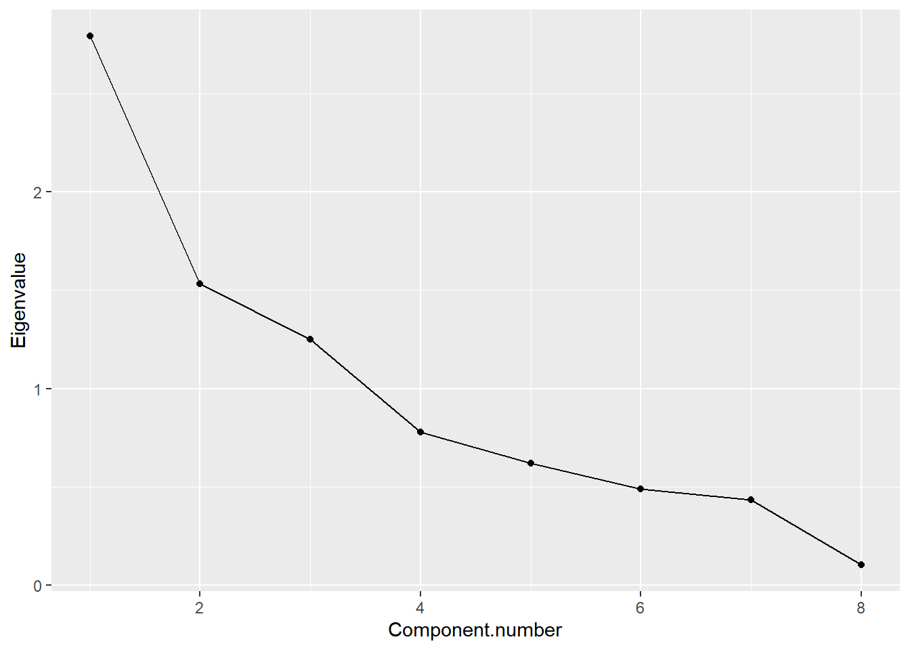
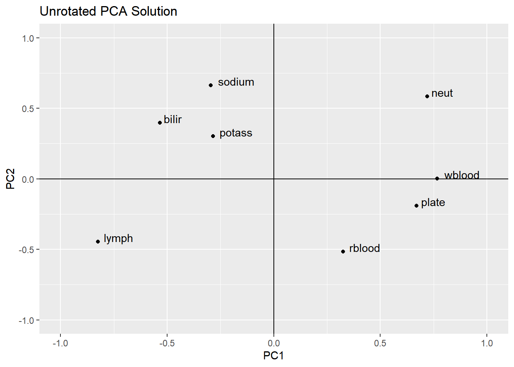
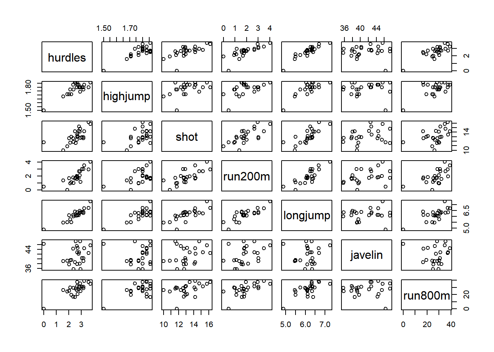
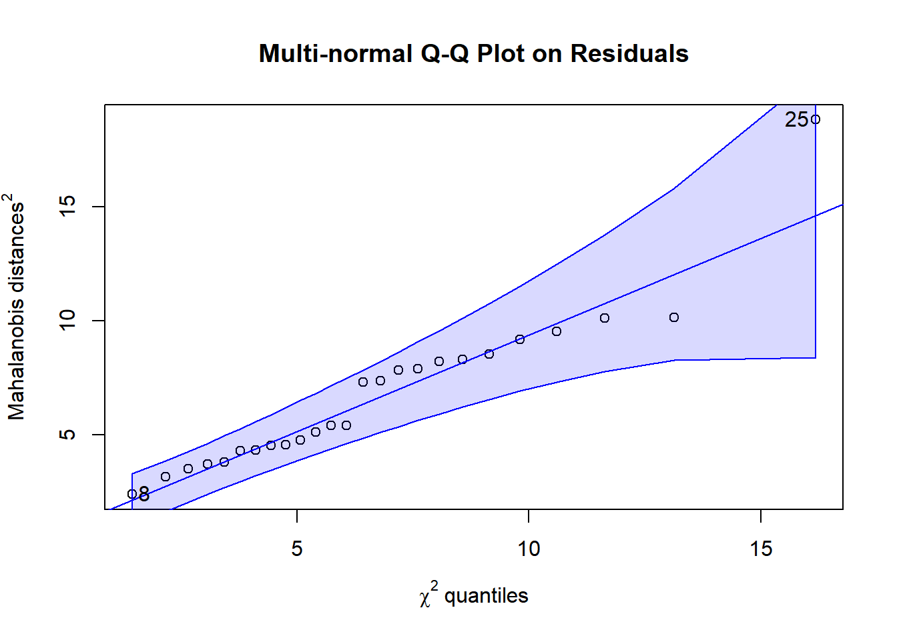
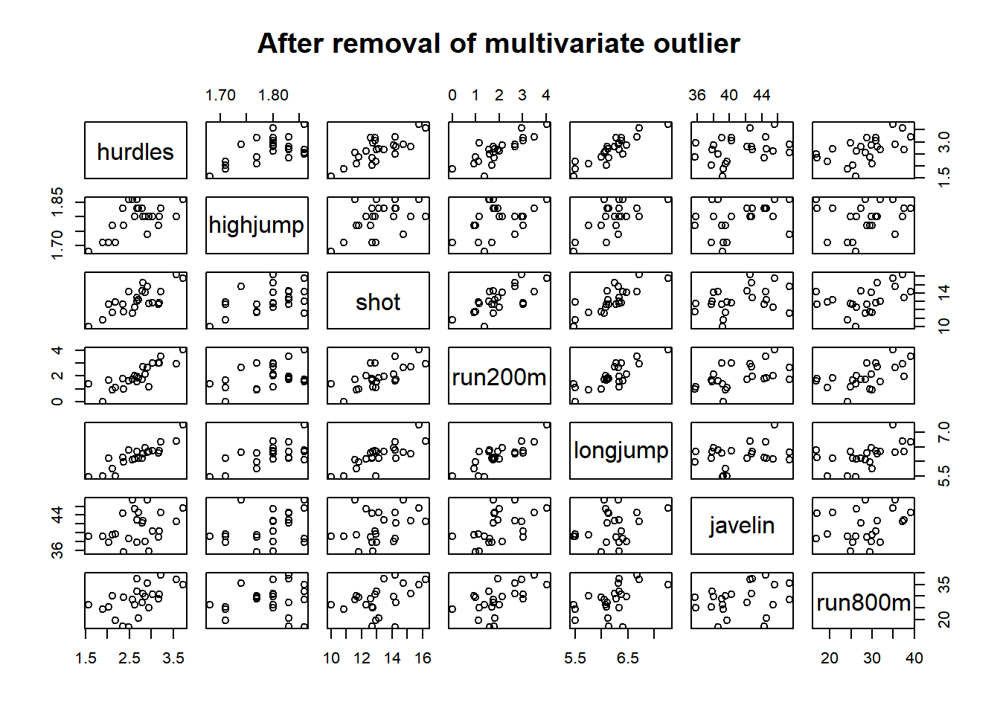
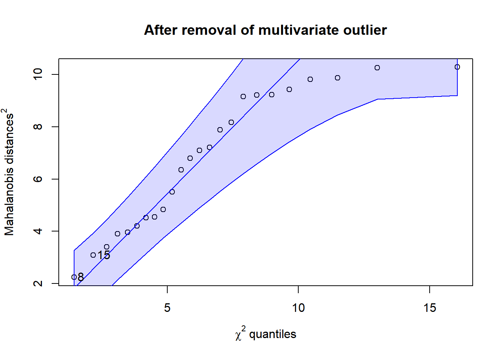
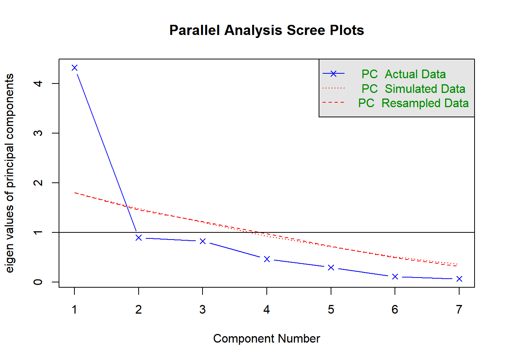

7 Week 06: Principal Components Analysis
Principal components analysis is a method developed by Pearson and later, independently, by Hottelling, in the early 20th century. It is a method for reducing the number of dimensions—or components—in a (usually large) set of variables. Originally, this was to identify the first, or principal, component, but there are often more dimensions that may be of interest in our research. The maximum number of components is p (or as Everitt and Hothorn (2011) label it, q), which is the number of variables. In this approach, we can think of the composites as dependent variables and the observed variables as the independent variables. This is similar to discriminant function analysis (DFA) in the sense that we’re creating optimal composites of variables based on the correlations in the data, but different in that—unlike DFA—in PCA we’re not optimizing these composites so that they explain group differences. We’re simply reducing the data to fewer dimensions. We can use the resulting composites scores in follow-up analyses, such as including them as the dependent or independent variable in a regression.
Let’s use the examples in Chapter 3 of Everitt and Hothorn (2011). Along the way, we’ll explore several features of principal components analysis, including the scaled and unscaled eigenvectors, the eigenvalues and their relationship to the variance of the components, reproducing the original covariance matrix (or correlation matrix if that is what our PCA is fit to), and different methods for calculating cases’ component scores. We’ll also meddle with different functions for PCA, including princomp(), prcomp(), eigen() of Base R, and the psych package’s pca() function (Revelle 2025).28 If you’re using SPSS, your PCA results will resemble those of the psych package’s output, which under the hood uses these other Base R functions.
7.1 Example 1, to see some properties of PCA
Here is the correlation matrix from the chapter. (I simply copied and pasted this and reformatted it, so there might be rounding error discrepancies with what is reported in the chapter.) The N-size is 72 but we do not have individual cases’ data.
varbnames <- c("rblood", "plate", "wblood", "neut", "lymph", "bilir", "sodium", "potass")
blood_corr <- matrix(
c( 1, 0.29, 0.202, -0.055, -0.105, -0.252, -0.229, 0.058,
0.290, 1, 0.415, 0.285, -0.376, -0.349, -0.164, -0.129,
0.202, 0.415, 1, 0.419, -0.521, -0.441, -0.145, -0.076,
-0.055, 0.285, 0.419, 1, -0.877, -0.076, 0.023, -0.131,
-0.105, -0.376, -0.521, -0.877, 1, 0.206, 0.034, 0.151,
-0.252, -0.349, -0.441, -0.076, 0.206, 1, 0.192, 0.077,
-0.229, -0.164, -0.145, 0.023, 0.034, 0.192, 1, 0.423,
0.058, -0.129, -0.076, -0.131, 0.151, 0.077, 0.423, 1),
ncol = 8, byrow = TRUE,
dimnames = list(varbnames, varbnames) )
blood_sd <- c(0.371, 41.253, 1.935, 0.077, 0.071, 4.037, 2.732, 0.297)
names(blood_sd) <- varbnamesLet’s print the correlation matrix to be sure it is what we expect:
## rblood plate wblood neut lymph bilir sodium potass
## rblood 1.000 0.290 0.202 -0.055 -0.105 -0.252 -0.229 0.058
## plate 0.290 1.000 0.415 0.285 -0.376 -0.349 -0.164 -0.129
## wblood 0.202 0.415 1.000 0.419 -0.521 -0.441 -0.145 -0.076
## neut -0.055 0.285 0.419 1.000 -0.877 -0.076 0.023 -0.131
## lymph -0.105 -0.376 -0.521 -0.877 1.000 0.206 0.034 0.151
## bilir -0.252 -0.349 -0.441 -0.076 0.206 1.000 0.192 0.077
## sodium -0.229 -0.164 -0.145 0.023 0.034 0.192 1.000 0.423
## potass 0.058 -0.129 -0.076 -0.131 0.151 0.077 0.423 1.000Here is the vector of standard deviations, which are needed to calculate the covariance matrix, which we only look at for comparison purposes:
## rblood plate wblood neut lymph bilir sodium potass
## 0.371 41.253 1.935 0.077 0.071 4.037 2.732 0.297Given the standard deviations and the correlation matrix, we can get the covariance matrix using some matrix algebra. Recall that to get from covariance to correlation, we divide each cell by the product of the two standard-deviations corresponding to the row and column. Here, we’re going in the opposite direction, so we’re multiplying each cell by the product of the row and column standard deviations. 29 Everitt and Hothorn are using the covariance matrix for demonstration of the difference between covariance and correlation—and of what not to do—so we normally wouldn’t care about this if we have the correlation matrix.
## [,1] [,2] [,3] [,4] [,5] [,6] [,7] [,8]
## [1,] 0.14 4.44 0.15 0.00 0.00 -0.38 -0.23 0.01
## [2,] 4.44 1701.81 33.13 0.91 -1.10 -58.12 -18.48 -1.58
## [3,] 0.15 33.13 3.74 0.06 -0.07 -3.44 -0.77 -0.04
## [4,] 0.00 0.91 0.06 0.01 0.00 -0.02 0.00 0.00
## [5,] 0.00 -1.10 -0.07 0.00 0.01 0.06 0.01 0.00
## [6,] -0.38 -58.12 -3.44 -0.02 0.06 16.30 2.12 0.09
## [7,] -0.23 -18.48 -0.77 0.00 0.01 2.12 7.46 0.34
## [8,] 0.01 -1.58 -0.04 0.00 0.00 0.09 0.34 0.097.1.1 PCA with Covariance vs. Correlation
We can use a PCA on a covariance matrix, correlation matrix, or the raw data. The correlation matrix is better than the covariance matrix if the observed variables are not on the same scale (which is most of the time). Conducting a PCA on the raw data is useful if we want to save each case’s composite scores and use them later on, say, in a regression or a plot.
Here is the PCA on the covariance matrix, which is on the original scale of the variables. The results of this are reported on Page 67 of the chapter.
## Importance of components:
## Comp.1 Comp.2 Comp.3 Comp.4 Comp.5 Comp.6
## Standard deviation 41.2877486 3.880212624 2.64197339 1.624583979 0.353951757 2.561722e-01
## Proportion of Variance 0.9856182 0.008705172 0.00403574 0.001525986 0.000072436 3.794288e-05
## Cumulative Proportion 0.9856182 0.994323381 0.99835912 0.999885108 0.999957544 9.999955e-01
## Comp.7 Comp.8
## Standard deviation 8.510631e-02 2.372715e-02
## Proportion of Variance 4.187837e-06 3.255049e-07
## Cumulative Proportion 9.999997e-01 1.000000e+00
##
## Loadings:
## Comp.1 Comp.2 Comp.3 Comp.4 Comp.5 Comp.6 Comp.7 Comp.8
## [1,] 0.943 0.329
## [2,] 0.999
## [3,] 0.192 0.981
## [4,] 0.758 0.650
## [5,] -0.649 0.760
## [6,] -0.961 0.195 0.191
## [7,] -0.193 -0.979
## [8,] 0.329 -0.942In this output under the label Loadings:, the eigenvector coefficients with very low absolute values (less than 0.10, it seems) are left blank in the printout. These coefficients actually do exist, and we can see them if we ask for them using blood_pcacov$loadings[1:64], where 64 is the number of cells in the eigenvector matrix (8 eigenvectors across 8 items).
What do you notice about the first component? How much of the total variance does it explain? Which observed variables have the largest coefficients? (Refer back to the standard deviations of the raw data and look at which variable seems to have a much larger scale, as reflected by the standard deviations.)
And, for comparison, here is the PCA on the correlation matrix, which is the preferred method.
## Importance of components:
## Comp.1 Comp.2 Comp.3 Comp.4 Comp.5 Comp.6 Comp.7
## Standard deviation 1.6710100 1.2375848 1.1177138 0.88227419 0.78839505 0.69917350 0.66002394
## Proportion of Variance 0.3490343 0.1914520 0.1561605 0.09730097 0.07769584 0.06110545 0.05445395
## Cumulative Proportion 0.3490343 0.5404863 0.6966468 0.79394778 0.87164363 0.93274908 0.98720303
## Comp.8
## Standard deviation 0.31996216
## Proportion of Variance 0.01279697
## Cumulative Proportion 1.00000000
##
## Loadings:
## Comp.1 Comp.2 Comp.3 Comp.4 Comp.5 Comp.6 Comp.7 Comp.8
## rblood 0.194 0.417 0.400 0.652 0.175 0.363 0.176 0.102
## plate 0.400 0.154 0.168 -0.848 -0.230 -0.110
## wblood 0.459 0.168 -0.274 0.251 -0.403 0.677
## neut 0.430 -0.472 -0.171 0.169 0.118 -0.237 0.678
## lymph -0.494 0.360 -0.180 -0.139 -0.136 0.157 0.724
## bilir -0.319 -0.320 -0.277 0.633 -0.162 -0.384 0.377
## sodium -0.177 -0.535 0.410 -0.163 -0.299 0.513 0.367
## potass -0.171 -0.245 0.709 0.198 -0.469 -0.376Notice how the correlation matrix has a very different proportion of variance being explained by the first component and that several of the observed variables are contributing to that component. This is very different from what we observed with the covariance matrix. In a correlation matrix, all of the variables are treated equally, being placed on the same scale that is bound between -1 and +1, which in turn provides a more accurate estimate of the components.
7.1.2 Unscaled eigenvectors
Note that what the princomp() function labels as “loadings” are actually the unscaled eigenvectors. To get the rescaled eigenvectors, which are more appropriate for interpreting the components, and which are what analysts from a factor-analysis tradition call loadings, we use the equation at the bottom of Page 70 in the chapter:
\[\mathbf{a}^*_i = \mathbf{a}_i\sqrt{\lambda}_i \] where \(i\) refers to the component number—in this example we have eight possible components. Following Everitt and Hothorn’s labeling system, \(\mathbf{a}_i\) represents the eigenvector for component \(i\), and the rescaled eigenvector has an asterisk. Also, the lowercase lambda, \(\lambda_i\), represents the eigenvalue of component \(i\). If we stuck these eight columns of vectors side-by-side in a matrix, we have a matrix of eigenvectors, \(\mathbf{A}\) and \(\mathbf{A^*}\), for the unscaled and scaled eigenvectors respectively (described on pp. 70–71 in the chapter).
Here are the eight eigenvectors, as they’re reported in the princomp() function under each column, labeled by the component. (Again, these are not loadings—they’re unscaled eigenvectors.)
##
## Loadings:
## Comp.1 Comp.2 Comp.3 Comp.4 Comp.5 Comp.6 Comp.7 Comp.8
## rblood 0.194 0.417 0.400 0.652 0.175 0.363 0.176 0.102
## plate 0.400 0.154 0.168 -0.848 -0.230 -0.110
## wblood 0.459 0.168 -0.274 0.251 -0.403 0.677
## neut 0.430 -0.472 -0.171 0.169 0.118 -0.237 0.678
## lymph -0.494 0.360 -0.180 -0.139 -0.136 0.157 0.724
## bilir -0.319 -0.320 -0.277 0.633 -0.162 -0.384 0.377
## sodium -0.177 -0.535 0.410 -0.163 -0.299 0.513 0.367
## potass -0.171 -0.245 0.709 0.198 -0.469 -0.376
##
## Comp.1 Comp.2 Comp.3 Comp.4 Comp.5 Comp.6 Comp.7 Comp.8
## SS loadings 1.000 1.000 1.000 1.000 1.000 1.000 1.000 1.000
## Proportion Var 0.125 0.125 0.125 0.125 0.125 0.125 0.125 0.125
## Cumulative Var 0.125 0.250 0.375 0.500 0.625 0.750 0.875 1.000The eigenvalues are available from the output, as well. The $sdev includes the standard deviations of each component (based on the unscaled eigenvector coefficients). If we square those, we have the component’s variance, or eigenvalue. There are eight eigenvalues—one for each component and these represent the repackaged variances when we create these components from the variables.
## Comp.1 Comp.2 Comp.3 Comp.4 Comp.5 Comp.6 Comp.7 Comp.8
## 2.7922743 1.5316161 1.2492841 0.7784077 0.6215668 0.4888436 0.4356316 0.1023758The components with higher eigenvalues explain more variability in the data. The first component, (which is the “principal” component that Pearson originally looked at), explains most of the variability in our data set.
7.1.3 Looking at the properties of eigenvectors and eigenvalues
Our handy R calculator has done the work in obtaining the eigenvectors and eigenvalues for us. The eigenvectors are the weights, analogous to regression coefficients; the eigenvalues represent the variance of the component, with higher values representing a stronger component. To obtain the eigenvectors, two constraints had to be in place:
- The sum of the squared coefficients is one, \(\mathbf{a}_i\prime\mathbf{a}_i = 1\).
- The cross-products of each eigenvector is zero, \(\mathbf{a}_i\prime\mathbf{a}_j = 0 \text{, where } j > i\).
Let’s check this out:
Here’s our first eigenvector:
## rblood plate wblood neut lymph bilir sodium potass
## 0.1942203 0.4003625 0.4588793 0.4303359 -0.4937748 -0.3194549 -0.1768857 -0.1705160Does \(\mathbf{a}_1\prime\mathbf{a}_1 = 1\)?
In other words, does
\[\begin{bmatrix} 0.19 & 0.40 & 0.46 & 0.43 & -0.49 & -0.32 & -0.18 & -0.17 \end{bmatrix} \begin{bmatrix} 0.19 \\ 0.40 \\ 0.46 \\ 0.43 \\ -0.49 \\ -0.32 \\ -0.18 \\ -0.17 \end{bmatrix} = 1 \text{ ?}\]
## [,1]
## [1,] 1It does.
Here’s our second eigenvector:
## rblood plate wblood neut lymph bilir sodium
## 0.4171230843 0.1539289974 -0.0002984974 -0.4724424229 0.3604497505 -0.3201664742 -0.5352734751
## potass
## -0.2452834631Does \(\mathbf{a}_2\prime\mathbf{a}_2 = 1\)?
## [,1]
## [1,] 1It does. This also sums to 1.
Okay, how about their cross-products: Does
\[\begin{bmatrix} 0.19 & 0.40 & 0.46 & 0.43 & -0.49 & -0.32 & -0.18 & -0.17 \end{bmatrix} \begin{bmatrix} 0.42 \\ 0.15 \\ 0.00 \\ -0.47 \\ 0.36 \\ -0.32 \\ -0.54 \\ -0.25 \end{bmatrix} = 0 \text{ ?}\]
## [,1]
## [1,] 0Indeed it does.
This latter condition ensures that the components are orthogonal—that is, unrelated.
We only checked the first two components, but we would find the same results with the rest.
7.1.3.1 Eigenvalues add up to total observed variance
We can also see that the sum of the eigenvalues (\(\lambda_1\) through \(\lambda_8\)) equals the sum of the variances of the observed variables. In other words, does
\[\sum{\lambda_i = s^2_1 + s^2_2 + \cdots + s^2_p} \text{ ?}\]
In our case, we fit the PCA to the data’s correlation matrix, which includes 1 on the diagonal, meaning that the variables are scaled to have a variance (and standard deviation) of 1. With that, the sum of our eigenvalues (before we reduce the number of components) should be the number of variables.
So we can ask whether the sum of the eigenvalues is 8, given that we have eight variables.
## [1] 8This demonstrates that the amount of variance is the same as it is in our original data, just repackaged.
7.1.3.2 Each component’s proportion of variance
What is the proportion of variance that each component explains? Given that we know the total variance, and each eigenvalue, we can use this code:
## Comp.1 Comp.2 Comp.3 Comp.4 Comp.5 Comp.6 Comp.7 Comp.8
## 0.349 0.191 0.156 0.097 0.078 0.061 0.054 0.013If we look up above to the results of summary(blood_pcacor, loadings = TRUE), we see these same values reported in the Proportion of Variance row.
7.1.3.3 Rescaling the eigenvectors
Let’s calculate the rescaled eigenvalues so they can be more easily interpreted. These coefficients represent the correlation between the observed variable and the component. These are what are outputted in SPSS and in the psych package’s pca() function, which we’ll use for our actual analysis. First, let’s calculate
\[\mathbf{a}^*_i = \mathbf{a}_i\sqrt{\lambda}_i \]
We could get the unscaled eigenvalues from the princomp() object using blood_pcacor$loadings[1:64] but that is less convenient (and not as easily reproducible in R code). Instead, we can use the eigen() function on the correlation matrix to get each component’s eigenvector and eigenvalue.
## eigen() decomposition
## $values
## [1] 2.7922743 1.5316161 1.2492841 0.7784077 0.6215668 0.4888436 0.4356316 0.1023758
##
## $vectors
## [,1] [,2] [,3] [,4] [,5] [,6] [,7] [,8]
## [1,] -0.1942203 0.4171230843 0.39976114 0.65159275 0.1752060 0.36281561 0.1763116 -0.10240413
## [2,] -0.4003625 0.1539289974 0.16772869 0.06371996 -0.8476003 -0.23041340 -0.1104646 -0.01017235
## [3,] -0.4588793 -0.0002984974 0.16777536 -0.27379988 0.2512311 -0.40295337 0.6769694 -0.05038622
## [4,] -0.4303359 -0.4724424229 -0.17128192 0.16914858 0.1177228 0.06459323 -0.2367450 -0.67792429
## [5,] 0.4937748 0.3604497505 0.08716408 -0.18037205 -0.1389990 -0.13572092 0.1572459 -0.72364606
## [6,] 0.3194549 -0.3201664742 -0.27661854 0.63331424 -0.1615438 -0.38374488 0.3765128 0.05214312
## [7,] 0.1768857 -0.5352734751 0.41027697 -0.16314269 -0.2988956 0.51279925 0.3670544 -0.01484605
## [8,] 0.1705160 -0.2452834631 0.70861094 0.08690517 0.1978511 -0.46913476 -0.3757113 0.02620828Let’s plug these into our equation, \(\mathbf{a}^*_i = \mathbf{a}_i\sqrt{\lambda}_i\). We could do each rescaled eigenvector at a time, or we could use this fancy matrix operation.
## [,1] [,2] [,3] [,4] [,5] [,6] [,7] [,8]
## [1,] -0.32 0.52 0.45 0.57 0.14 0.25 0.12 -0.03
## [2,] -0.67 0.19 0.19 0.06 -0.67 -0.16 -0.07 0.00
## [3,] -0.77 0.00 0.19 -0.24 0.20 -0.28 0.45 -0.02
## [4,] -0.72 -0.58 -0.19 0.15 0.09 0.05 -0.16 -0.22
## [5,] 0.83 0.45 0.10 -0.16 -0.11 -0.09 0.10 -0.23
## [6,] 0.53 -0.40 -0.31 0.56 -0.13 -0.27 0.25 0.02
## [7,] 0.30 -0.66 0.46 -0.14 -0.24 0.36 0.24 0.00
## [8,] 0.28 -0.30 0.79 0.08 0.16 -0.33 -0.25 0.01In this code, the diag(sqrt(vals.and.vects$values)) is the square root of each component’s eigenvalue placed on the diagonal in a square matrix, which has zeros on the off-diagonal. With our data, the eigenvalue diagonal matrix (before square-rooting) looks like this, with capital lambda, \(\mathbf{\Lambda}\), being used to symbolize it given that each element on the diagonal is a little lambda \(\lambda_i\):
\[ \mathbf{\Lambda} = \begin{bmatrix} 2.79 & 0 & 0 & 0 & 0 & 0 & 0 & 0\\ 0 & 1.53 & 0 & 0 & 0 & 0 & 0 & 0\\ 0 & 0 & 1.25 & 0 & 0 & 0 & 0 & 0\\ 0 & 0 & 0 & 0.78 & 0 & 0 & 0 & 0\\ 0 & 0 & 0 & 0 & 0.62 & 0 & 0 & 0\\ 0 & 0 & 0 & 0 & 0 & 0.49 & 0 & 0\\ 0 & 0 & 0 & 0 & 0 & 0 & 0.44 & 0\\ 0 & 0 & 0 & 0 & 0 & 0 & 0 & 0.10 \end{bmatrix} \]
This is also represented as \(\mathbf{\lambda} \mathbf{I}\) because multiplying the vector of eigenvalues by a \(p \times p\) identity matrix will give the same result as diag(eigenvalues).
Again, we’re using the square roots of the diagonal, diag(sqrt(vals.and.vects$values)):
\[ \begin{bmatrix}
\sqrt{2.79} & 0 & 0 & 0 & 0 & 0 & 0 & 0\\
0 & \sqrt{1.53} & 0 & 0 & 0 & 0 & 0 & 0\\
0 & 0 & \sqrt{1.25} & 0 & 0 & 0 & 0 & 0\\
0 & 0 & 0 & \sqrt{0.78} & 0 & 0 & 0 & 0\\
0 & 0 & 0 & 0 & \sqrt{0.62} & 0 & 0 & 0\\
0 & 0 & 0 & 0 & 0 & \sqrt{0.49} & 0 & 0\\
0 & 0 & 0 & 0 & 0 & 0 & \sqrt{0.44} & 0\\
0 & 0 & 0 & 0 & 0 & 0 & 0 & \sqrt{0.10}
\end{bmatrix} \]
When we matrix-multiply the matrix of unscaled eigenvectors (vals.and.vects$vectors) by this diagonal matrix, each eigenvector cell is multiplied by its respective component’s \(\sqrt{\text{eigenvalue}}\) and placed into its corresponding cell in the resulting matrix, which contains our rescaled eigenvectors (\(\mathbf{a}^*_i\)), AKA “loadings”.
This is the set of coefficients that represents the correlation between the observed variable and the component.
7.1.3.4 Reproducing the covariance (or correlation) matrix
We can reproduce the matrix from which we performed the principal components analysis on (in this case, the correlation matrix) using the equation at the top of Page 71 in the chapter:
\[\mathbf{S} = \mathbf{A^*}\mathbf{A^*}^\prime \]
## [,1] [,2] [,3] [,4] [,5] [,6] [,7] [,8]
## [1,] 1.000 0.290 0.202 -0.055 -0.105 -0.252 -0.229 0.058
## [2,] 0.290 1.000 0.415 0.285 -0.376 -0.349 -0.164 -0.129
## [3,] 0.202 0.415 1.000 0.419 -0.521 -0.441 -0.145 -0.076
## [4,] -0.055 0.285 0.419 1.000 -0.877 -0.076 0.023 -0.131
## [5,] -0.105 -0.376 -0.521 -0.877 1.000 0.206 0.034 0.151
## [6,] -0.252 -0.349 -0.441 -0.076 0.206 1.000 0.192 0.077
## [7,] -0.229 -0.164 -0.145 0.023 0.034 0.192 1.000 0.423
## [8,] 0.058 -0.129 -0.076 -0.131 0.151 0.077 0.423 1.000We can get the residual covariance matrix from this by subtracting the reproduced covariance from the original covariance (or correlations in this case):
## rblood plate wblood neut lymph bilir sodium potass
## rblood 0 0 0 0 0 0 0 0
## plate 0 0 0 0 0 0 0 0
## wblood 0 0 0 0 0 0 0 0
## neut 0 0 0 0 0 0 0 0
## lymph 0 0 0 0 0 0 0 0
## bilir 0 0 0 0 0 0 0 0
## sodium 0 0 0 0 0 0 0 0
## potass 0 0 0 0 0 0 0 0This reproduced correlation is indeed the same as our raw correlation matrix. (If we had conducted the PCA on the covariance matrix, it would return the covariance matrix). This demonstrates that the linear recombination of the variables stil represents the covariance of the raw data.
But, what if we used only seven of those components instead of all eight? Our reproduced covariance or correlation matrix will be very similar, but not identical to, the original matrix because that last component was explaining some proportion of the variance. Now, we see some residuals. The seven components do not perfectly explain the data.
## rblood plate wblood neut lymph bilir sodium potass
## rblood 0.001 0.000 0.001 0.007 0.008 -0.001 0.000 0.000
## plate 0.000 0.000 0.000 0.001 0.001 0.000 0.000 0.000
## wblood 0.001 0.000 0.000 0.003 0.004 0.000 0.000 0.000
## neut 0.007 0.001 0.003 0.047 0.050 -0.004 0.001 -0.002
## lymph 0.008 0.001 0.004 0.050 0.054 -0.004 0.001 -0.002
## bilir -0.001 0.000 0.000 -0.004 -0.004 0.000 0.000 0.000
## sodium 0.000 0.000 0.000 0.001 0.001 0.000 0.000 0.000
## potass 0.000 0.000 0.000 -0.002 -0.002 0.000 0.000 0.000When we reduce the data to fewer components, we’re seeking parsimony while capitalizing on the optimal linear combinations of the variables, but we are not perfectly explaining the data.
7.1.3.5 Summary of the vectors and matrices
We have the following vectors and matrices:
\(\mathbf{a}_i\) An eigenvector. \(\mathbf{a}_1\) is eigenvector 1, \(\mathbf{a}_2\) is eigenvector 2, and so forth
\(\mathbf{A}\) A matrix of eigenvectors. Column 1 is eigenvector 1. Column 2 is eigenvector 2, and so forth
\(\mathbf{a}^*_i\) A rescaled eigenvector, so we can interpret the coefficients as correlations (or so-called loadings)
\(\mathbf{A}^*\) A matrix of rescaled eigenvectors
\(\mathbf{\lambda_i}\) Lowercase lambda, the eigenvalue of Component \(i\)
\(\mathbf{\Lambda}\) Uppercase lambda, a diagonal matrix of eigenvalues, also represented as \(\mathbf{\lambda} \mathbf{I}\)
\(\mathbf{S}\) The covariance matrix of the observed data
\(\mathbf{R}\) The correlation matrix of the observed data
It is worth noting that correlation, eigenvectors, and eigenvalues are all related:
An eigenvalue matrix is related to the eigevectors and correlation matrix, \(\mathbf{\Lambda} = \mathbf{A}^\prime \mathbf{R} \mathbf{A}\)
## [,1] [,2] [,3] [,4] [,5] [,6] [,7] [,8]
## [1,] 2.79 0.00 0.00 0.00 0.00 0.00 0.00 0.0
## [2,] 0.00 1.53 0.00 0.00 0.00 0.00 0.00 0.0
## [3,] 0.00 0.00 1.25 0.00 0.00 0.00 0.00 0.0
## [4,] 0.00 0.00 0.00 0.78 0.00 0.00 0.00 0.0
## [5,] 0.00 0.00 0.00 0.00 0.62 0.00 0.00 0.0
## [6,] 0.00 0.00 0.00 0.00 0.00 0.49 0.00 0.0
## [7,] 0.00 0.00 0.00 0.00 0.00 0.00 0.44 0.0
## [8,] 0.00 0.00 0.00 0.00 0.00 0.00 0.00 0.1A correlation is reproduced from the eigenvectors and eigenvalues, \(\mathbf{R} = \mathbf{A} \mathbf{\Lambda} \mathbf{A}^\prime\), or \(\mathbf{R} = (\mathbf{A} \mathbf{\Lambda^{1/2}})( \mathbf{\Lambda^{1/2}} \mathbf{A}^\prime)\)
## [,1] [,2] [,3] [,4] [,5] [,6] [,7] [,8]
## [1,] 1.00 0.29 0.20 -0.06 -0.11 -0.25 -0.23 0.06
## [2,] 0.29 1.00 0.42 0.29 -0.38 -0.35 -0.16 -0.13
## [3,] 0.20 0.42 1.00 0.42 -0.52 -0.44 -0.15 -0.08
## [4,] -0.06 0.28 0.42 1.00 -0.88 -0.08 0.02 -0.13
## [5,] -0.11 -0.38 -0.52 -0.88 1.00 0.21 0.03 0.15
## [6,] -0.25 -0.35 -0.44 -0.08 0.21 1.00 0.19 0.08
## [7,] -0.23 -0.16 -0.15 0.02 0.03 0.19 1.00 0.42
## [8,] 0.06 -0.13 -0.08 -0.13 0.15 0.08 0.42 1.007.1.4 Using the psych package
The psych package’s pca() function reports results that are ready for interpretation. It automatically uses the correlation matrix rather than the covariance matrix.
We specify the correlation matrix or the raw data, the number of factors we wish to extract, which in a preliminary analysis is the number of observed variables (8 in our example). In PCA, we can avoid rotating the solution for now.
library(psych)
pc_psy <- psych::pca(blood_corr, # can also use the raw data as input.
nfactors = 8,
rotate = 'none')
print(pc_psy,digits=2)## Principal Components Analysis
## Call: principal(r = r, nfactors = nfactors, residuals = residuals,
## rotate = rotate, n.obs = n.obs, covar = covar, scores = scores,
## missing = missing, impute = impute, oblique.scores = oblique.scores,
## method = method, use = use, cor = cor, correct = 0.5, weight = NULL)
## Standardized loadings (pattern matrix) based upon correlation matrix
## PC1 PC2 PC3 PC4 PC5 PC6 PC7 PC8 h2 u2 com
## rblood 0.32 -0.52 0.45 0.57 -0.14 -0.25 0.12 0.03 1 -4.4e-16 4.2
## plate 0.67 -0.19 0.19 0.06 0.67 0.16 -0.07 0.00 1 1.1e-15 2.5
## wblood 0.77 0.00 0.19 -0.24 -0.20 0.28 0.45 0.02 1 1.4e-15 2.5
## neut 0.72 0.58 -0.19 0.15 -0.09 -0.05 -0.16 0.22 1 2.0e-15 2.6
## lymph -0.83 -0.45 0.10 -0.16 0.11 0.09 0.10 0.23 1 6.7e-16 2.0
## bilir -0.53 0.40 -0.31 0.56 0.13 0.27 0.25 -0.02 1 1.8e-15 4.5
## sodium -0.30 0.66 0.46 -0.14 0.24 -0.36 0.24 0.00 1 1.8e-15 3.7
## potass -0.28 0.30 0.79 0.08 -0.16 0.33 -0.25 -0.01 1 2.8e-15 2.4
##
## PC1 PC2 PC3 PC4 PC5 PC6 PC7 PC8
## SS loadings 2.79 1.53 1.25 0.78 0.62 0.49 0.44 0.10
## Proportion Var 0.35 0.19 0.16 0.10 0.08 0.06 0.05 0.01
## Cumulative Var 0.35 0.54 0.70 0.79 0.87 0.93 0.99 1.00
## Proportion Explained 0.35 0.19 0.16 0.10 0.08 0.06 0.05 0.01
## Cumulative Proportion 0.35 0.54 0.70 0.79 0.87 0.93 0.99 1.00
##
## Mean item complexity = 3
## Test of the hypothesis that 8 components are sufficient.
##
## The root mean square of the residuals (RMSR) is 0
##
## Fit based upon off diagonal values = 1The output under the label Standardized loadings is the same reweighted eigenvector matrix, \(\mathbf{A^*}\), we calculated above. Again, these represent the correlations between each observed variable and each component.
7.1.5 Determining how many components to retain
One of the most valuable reasons for using PCA is for dimension reduction. There are several different methods for determining how many components to retain. Some analysts set the threshold to be sure that they have enough components to explain some pre-specified proportion of variance, such as 80%. Some use Kaiser’s rule of retaining components of values of at least \(1.00\), though Joliffe (1972) suggested a threshold of \(0.70\). Others (Cattell 1966) suggested using a scree plot to see where the elbow in the curve is, though this may be more appropriate for factor analysis rather than PCA. Another is the parallel test. And still another is the Hull test, which can be used if the PCA is on the data set rather than a correlation matrix.
7.1.5.1 1. Kaiser’s rule
The eigenvalue-greater-than-one approach, also called the K1 criterion named after the Kaiser’s (1974) work, can be used in PCA to determine the number of factors to retain.
##
## Loadings:
## PC1 PC2 PC3 PC4 PC5 PC6 PC7 PC8
## rblood 0.325 -0.516 0.447 0.575 -0.138 -0.254 0.116
## plate 0.669 -0.191 0.187 0.668 0.161
## wblood 0.767 0.188 -0.242 -0.198 0.282 0.447
## neut 0.719 0.585 -0.191 0.149 -0.156 0.217
## lymph -0.825 -0.446 -0.159 0.110 0.104 0.232
## bilir -0.534 0.396 -0.309 0.559 0.127 0.268 0.249
## sodium -0.296 0.662 0.459 -0.144 0.236 -0.359 0.242
## potass -0.285 0.304 0.792 -0.156 0.328 -0.248
##
## PC1 PC2 PC3 PC4 PC5 PC6 PC7 PC8
## SS loadings 2.792 1.532 1.249 0.778 0.622 0.489 0.436 0.102
## Proportion Var 0.349 0.191 0.156 0.097 0.078 0.061 0.054 0.013
## Cumulative Var 0.349 0.540 0.697 0.794 0.872 0.933 0.987 1.000Based on this criterion, we would retain three components, as the eigenvalues, listed in the SS loadings row are above 1.00 in the first three components. If we used 80% of the variance explained as a criterion instead of Kaiser’s rule, we would look at the pca() output at the Cumulative Proportion line and see that we’d need more at least five components, as Component 4 explains 79% of the variance. It’s borderline, but them’s the rules we would have set for ourselves.
7.1.5.2 2. Scree plot
Let’s generate a scree plot. We can use this to not only see those components with eigenvalues that exceed 1.00 but we can see where the plot levels off.
Though there are packages that can do this for us, we can do this with ggplot.30 First, we create a data frame that includes the component number and the eigenvalue. For this, we can get the eigenvalues from the psych::pca() outputted object with the $values.
vals.and.vects <- data.frame(Component.number = 1:length(pc_psy$values),
Eigenvalue = pc_psy$values)
# Commented out here is the corresponding code if we used the object outputted
# from the `princomp()` function.
# vals.and.vects <- data.frame(Component.number = 1:length(blood_pcacor$sdev^2),
# Eigenvalue = blood_pcacor$sdev^2)
ggplot(vals.and.vects, aes(x = Component.number, y = Eigenvalue ) ) +
geom_line() +
geom_point()
With this plot, we seek to find where the slope changes. The first component is clearly present, as the slope is much steeper from the first to second component than it is from the second to third component, whose slope resembles the rest of the scree. In other words, if we drew a line of best for all of the eigenvalues from Component 2 through 8, such a line would have the points close to it. However, we might decide to retain three components because the eigenvalues after Component 3 seem to flatten out. This is a good example of when this eyeballing technique is not so straightforward.
7.1.5.3 3. Parallel analysis
The parallel analysis (Horn 1965) provides a method for comparing our data to randomly generated data sets having the same number of cases and observed variables. After ranking these randomly generated data from low to high, the procedure can estimate the eigenvalue at each \(n\)th component at the 95 percentile level. We compare the eigenvalues calculated from our observed data with those of the randomly generated data. If with a given model, such as one with \(n\) components, 95% of the randomly drawn samples have eigenvalues that are lower than what we observe in our data, we can assume that the component structure in our data lies outside that 0-to-95 percent range (in other words, our extreme eigenvalues do not likely to occur by random luck). The last component to meet this criterion is the number of components to retain. Up to that point, the components explain more of the variance than would occur by chance at the 95% cutoff.
We can use the parallel() function from the nFactors package (Raiche and Magis 2025) to perform a parallel analysis. The parallel analysis takes random draws of data and estimates the eigenvalues that would occur randomly in each random draw. The mean of the random draws is reported, along with the 95 percentile. We want to use the 95 percentile.
The first step is to compute the eigenvalues, which we did above with the scree plot.
library(nFactors)
# help(package="nFactors")
n_i <- 72 # The number of cases in our data
n_p <- ncol(blood_corr) # The number of variables in our data
set.seed(123) # To reproduce our randomly generated results.
Eigs <- pc_psy$values # The eigenvalues
n_components <- length(Eigs) # number of components
paral <- parallel(subject = n_i, # The number of cases in our data
var = n_p, # The number of variables in our data
rep = 100,
quantile = .95,
model = "components")
ParallelAna <- data.frame(Ncomponent = 1:n_components,
Eigs,
RandEigM = paral$eigen$mevpea,
RandEig95= paral$eigen$qevpea)
ParallelAna <- round(ParallelAna, 3)
ParallelAna## Ncomponent Eigs RandEigM RandEig95
## 1 1 2.792 1.527 1.707
## 2 2 1.532 1.315 1.454
## 3 3 1.249 1.159 1.265
## 4 4 0.778 1.033 1.122
## 5 5 0.622 0.919 0.980
## 6 6 0.489 0.803 0.882
## 7 7 0.436 0.688 0.778
## 8 8 0.102 0.556 0.660Based on these results, it looks like we should retain two components, as explained below.
First, it is worth mentioning that because this operation is based on random draws of the data, the point estimate and 95th percentile estimate will differ if we performed this operation again. In our code, we used the set.seed() function to make this particular result reproducible. We can remove that line of code or change the seed values and observe different results.31
In our output, we can use the rightmost column and identify at what point 95% of the randomly drawn data’s eigenvalues exceed our reduced-eigenvalue estimates. We see that it is at component number \(3\) that our observed reduced eigenvalue (\(1.249\)) is exceeded by the randomly generated eigenvalue (\(1.265\)). Based on this, we step down to one component below this and decide we should retain \(2\) components.
How many should we retain? The parallel analysis might make the most sense with these data, as it is compares random draws. With this, we might retain two components.
7.1.6 Reduced PCA model
library(psych)
pc_psy <- psych::pca(blood_corr,
nfactors = 2,
rotate = 'none')
print(pc_psy, digits = 3)## Principal Components Analysis
## Call: principal(r = r, nfactors = nfactors, residuals = residuals,
## rotate = rotate, n.obs = n.obs, covar = covar, scores = scores,
## missing = missing, impute = impute, oblique.scores = oblique.scores,
## method = method, use = use, cor = cor, correct = 0.5, weight = NULL)
## Standardized loadings (pattern matrix) based upon correlation matrix
## PC1 PC2 h2 u2 com
## rblood 0.325 -0.516 0.372 0.628 1.68
## plate 0.669 -0.191 0.484 0.516 1.16
## wblood 0.767 0.000 0.588 0.412 1.00
## neut 0.719 0.585 0.859 0.141 1.92
## lymph -0.825 -0.446 0.880 0.120 1.54
## bilir -0.534 0.396 0.442 0.558 1.85
## sodium -0.296 0.662 0.526 0.474 1.38
## potass -0.285 0.304 0.173 0.827 1.99
##
## PC1 PC2
## SS loadings 2.792 1.532
## Proportion Var 0.349 0.191
## Cumulative Var 0.349 0.540
## Proportion Explained 0.646 0.354
## Cumulative Proportion 0.646 1.000
##
## Mean item complexity = 1.6
## Test of the hypothesis that 2 components are sufficient.
##
## The root mean square of the residuals (RMSR) is 0.127
##
## Fit based upon off diagonal values = 0.8237.1.7 Interpretation
The pysch output is formatted for factor-analysis, which is closely related to PCA but used for a a different purpose (EFA is for estimating latent variables). Here, we have the first two components, PC1 and PC2, the communalities h2, the unique variances, u2, and the complexity, com. These were not explained in our reading but will be in the explanation about exploratory factor analysis. Each observed variable’s communality is the proportion of its variance that is shared with the two factors. If we sum the squared coefficients, we get the communality; for example, with rblood, \(.325^2 + (-.516)^2 = .372\). The unique variance is what is not explained by the shared variance; with this example, it is \(1 - .3718 = .628\). The complexity refers to how strongly the item loads on other components. The last observed variable, potassium, seems to be evenly shared across two components; it’s complexity is 1.99 and we can see that indeed its loadings on PC1 and PC2 are nearly equal in strength. It is easier to interpret models that have low complexity.
These coefficients (or “loadings” to some researchers) are unrotated. In this data set, it seems that the first component is due to a large part from the variability in the lymphocites variable, (-825) as well as to the white blood cell counts, neutrophil levels, platelet counts, bilirubin levels, and to a small extent red blood cell counts. The component seems to be explained in one direction by lymphocyte levels and bilirubin levels and in the opposite direction from the others.32
The second component seems to be an indicator of levels of sodium, neutrophil, red blood cells, lymphocytes, bilirubin, and to a small extent, potassium, with different signs among these. Interpreting these is not easy because the components do not seem to parsimoniously explain the observed variables. When this occurs, many analysts will rotate the solution so that the components more easily align with the variables; others will disagree and state that this changes the structure.
7.1.7.1 Plot
Let’s create a plot of the component scores.
To prepare for this, let’s save the rescaled eigenvector matrix (the loadings). We’ll use the cbind() function on the $loadings part of the outputted object from our PCA model.
## PC1 PC2
## rblood 0.3245441 -0.5162251871
## plate 0.6690097 -0.1905001868
## wblood 0.7667919 0.0003694159
## neut 0.7190955 0.5846875596
## lymph -0.8251026 -0.4460871309
## bilir -0.5338122 0.3962331606
## sodium -0.2955777 0.6624463145
## potass -0.2849339 0.3035590847A %>%
data.frame(.) %>%
ggplot(aes(x = PC1, y = PC2)) +
geom_vline( aes(xintercept = 0) ) +
geom_hline( aes(yintercept = 0) ) +
geom_point() +
scale_x_continuous(limits=c(-1,1)) +
scale_y_continuous(limits=c(-1,1)) +
geom_text(hjust=-.2, vjust=0, label = rownames(A)) +
labs( title = "Unrotated PCA Solution")
This kind of plot helps us to see which variables are more strongly explaining which component. Those closest to the horizontal axis and farther away from the origin are more strongly contributing to Component 1. Those closer to the vertical axis and farther away from the origin more strongly explain Component 2, which in this case does not seem to include many; sodium is the strongest one with Component 2.
7.1.8 Interpretation of the rotated solution
Some researchers caution against rotating the solution, as it changes structure. Others argue for it, as it helps us to explain the components. We specify rotate = varimax for varimax rotation so that the PCA solution remains orthogonal; that is, so that the components do not correlate with each other but rather explain unrelated features of the combination of variables.33 This type of orthogonal rotation is probably fine with data that are assumed to exist in the world rather. With data that are based on social or psychological constructions, such as academic proficiency, orthogonal rotation makes less sense.
library(psych)
pc_psy_rot <- psych::pca(blood_corr,
nfactors = 2,
rotate = 'varimax')
print(pc_psy_rot, digits = 3)## Principal Components Analysis
## Call: principal(r = r, nfactors = nfactors, residuals = residuals,
## rotate = rotate, n.obs = n.obs, covar = covar, scores = scores,
## missing = missing, impute = impute, oblique.scores = oblique.scores,
## method = method, use = use, cor = cor, correct = 0.5, weight = NULL)
## Standardized loadings (pattern matrix) based upon correlation matrix
## RC1 RC2 h2 u2 com
## rblood 0.003 -0.610 0.372 0.628 1.00
## plate 0.467 -0.515 0.484 0.516 1.98
## wblood 0.651 -0.405 0.588 0.412 1.67
## neut 0.919 0.116 0.859 0.141 1.03
## lymph -0.936 0.058 0.880 0.120 1.01
## bilir -0.244 0.619 0.442 0.558 1.30
## sodium 0.099 0.719 0.526 0.474 1.04
## potass -0.081 0.408 0.173 0.827 1.08
##
## RC1 RC2
## SS loadings 2.440 1.884
## Proportion Var 0.305 0.235
## Cumulative Var 0.305 0.540
## Proportion Explained 0.564 0.436
## Cumulative Proportion 0.564 1.000
##
## Mean item complexity = 1.3
## Test of the hypothesis that 2 components are sufficient.
##
## The root mean square of the residuals (RMSR) is 0.127
##
## Fit based upon off diagonal values = 0.823In this rotated structure, we see it is easier to give a label to the first component as being explained by lymphocyte and neutrophil levels (in opposite directions), and white blood cell and platelet counts.
A_rot <- cbind(pc_psy_rot$loadings)
A_rot %>%
data.frame(.) %>%
ggplot(aes(x = RC1, y = RC2)) +
geom_vline( aes(xintercept = 0) ) +
geom_hline( aes(yintercept = 0) ) +
geom_point() +
scale_x_continuous(limits=c(-1,1)) +
scale_y_continuous(limits=c(-1,1)) +
geom_text(hjust=-.2, vjust=0, label = rownames(A)) +
labs( title = "Rotated PCA Solution") In this plot, the variables all remain in same space relative to each other. It is the component axes that have moved. In comparing this to the unrotated solution, it looks like we rotated the axes about 45 degrees.
In this plot, the variables all remain in same space relative to each other. It is the component axes that have moved. In comparing this to the unrotated solution, it looks like we rotated the axes about 45 degrees.
We see that with the rotated solution, the axes of the components have been moved closer to the observed variables, thereby reducing their complexity and making it easier to associate some variables with individual components. This comes at a cost, however, as we also see that now, compared to our unrotated model, the platelet and white-blood cell variables are now somewhere in between the two components. Their complexities are now high whereas before in the unrotated model, they were low because they were both close to the first component axis (the horizontal axis). Whether to rotate or not is a decision made by the researcher. In the social sciences, we tend to rotate the components, though in the social sciences, we should not usually use PCA because we tend to think more about latent constructs, which are best estimated using EFA.
7.2 Example Two
Everitt and Hothorn use a data set called headsize which I copied and pasted and saved as a csv file. Each case in this data set is a family and the two observed variables being analyzed are head1 and head2 for the head size of the first and second born male child in the family.
This provides an example of how we can perform PCA on a data set instead of the correlation matrix. It also allows for us to see how we can obtain a component score for each observation. There are several ways to calculate component scores (unfortunately).
Let’s try the prcomp() function for the PCA. This is similar to the princomp() function, which they used in the chapter with these data, but it’s easier to use its output.
7.2.1 PCA on Unstandardized Scores
Here’s the PCA Everitt and Hothorn conducted, which was on the raw data and in the original scale. Normally, we do not perform PCA on the unstandardized scale of the data because, as we saw above, variables with larger scales are given more weight.34
head_pca <- prcomp(~ head1 + head2,
data = head_dat,
retx = FALSE, # Not rotating
scale = FALSE) # Using raw data scores instead of standardized scores.
head_pca## Standard deviations (1, .., p=2):
## [1] 12.952459 5.322951
##
## Rotation (n x k) = (2 x 2):
## PC1 PC2
## head1 -0.6929858 0.7209512
## head2 -0.7209512 -0.6929858## Importance of components:
## PC1 PC2
## Standard deviation 12.9525 5.3230
## Proportion of Variance 0.8555 0.1445
## Cumulative Proportion 0.8555 1.0000The eigenvalues of the PCA on the non-standardized scores are \(12.9525^2\) and \(5.3230^2\), or \(167.767\) and \(28.334\) respectively.
7.2.1.1 Hand calculating component scores from this PCA
Following the explanation in Everitt and Horthorn, we can calculate each family’s score on each of the two components after centering their observed scores on the variables. For example, each family’s observed center score on head1 is their deviation score, \(x_{i1} - \bar{x}_1\); on head1, it is \(x_{i2} - \bar{x}_2\).
\[ C_{i1} = 0.693(x_{i1} - \bar{x}_1) + .721(x_{i2} - \bar{x}_2) \] \[ C_{i2} = .721(x_{i1} - \bar{x}_1) - .693(x_{i2} - \bar{x}_2) \]
We can do this in tidyverse:
head_dat <- head_dat %>%
mutate(C1.cent = 0.693 *(head1 - mean(head1)) + .721*(head2 - mean(head2)),
C2.cent = 0.721 *(head1 - mean(head1)) - .693*(head2 - mean(head2)) )
head(head_dat) # PCA can be very ... heady `groan() = TRUE`.## head1 head2 C1.cent C2.cent
## 1 191 179 0.1694 7.161
## 2 195 201 18.8034 -5.201
## 3 181 185 -2.4346 -4.207
## 4 183 188 1.1144 -4.844
## 5 176 171 -15.9936 1.890
## 6 208 192 21.3234 10.409A more reproducible way to do this same calculation is with the matrix of eigenvectors and the raw scores. Also, whereas above, we calculated the centered scores by hand, we can use the scale() function in Base R to get centered scores, with the arguments center = TRUE and scale = FALSE. (If we set scale = TRUE, we get standardized scores.) We also need to save the eigenvectors as a matrix using A <- cbind(head_pca$rotation). Then we can matrix multiply the matrix of centered scores by the matrix of eigenvectors, \(\mathbf{A}\)
head_centrd <- cbind( scale(head_dat[ , c("head1", "head2")],
center = TRUE,
scale = FALSE) )
A <- cbind(head_pca$rotation)
head_dat[, c("C1.cent", "C2.cent")] <- head_centrd %*% A
head(head_dat)## head1 head2 C1.cent C2.cent
## 1 191 179 -0.1695614 7.160674
## 2 195 201 -18.8024312 -5.201210
## 3 181 185 2.4345897 -4.206753
## 4 183 188 -1.1142355 -4.843808
## 5 176 171 15.9928357 1.890292
## 6 208 192 -21.3226862 10.408028We learned that the eigenvalues are the variances of the composite variables. Let’s look into this.
## varC1 varC2
## 1 167.7662 28.33381These are the same as the square of the standard deviations reported in the output, \(12.9525^2\) and \(5.3230^2\), resulting in the two eigenvalues, \(167.767\) and \(28.334\).
7.2.2 PCA on the Standardized Scores
We almost always conduct a PCA on the standardized observed data rather than on the unstandardized data because it ensures that some variables, with excessive variance, do not take up all of the variance in the PCA solution.
Let’s take a look at the standardized observed scores.
## head1 head2
## [1,] 0.5408822 -0.4820596
## [2,] 0.9506414 1.7091204
## [3,] -0.4835159 0.1155349
## [4,] -0.2786363 0.4143322
## [5,] -0.9957149 -1.2788523
## [6,] 2.2823588 0.8127286These scores, by definition, have a mean of zero and a standard deviation of one.
We can also recognize that (a) the correlation and covariance matrices are the same when we have standardized data, and (b) the eigen() function on this covariance matrix returns the same eigenvalues and eigenvectors as we will observe in our output below. This simply confirms that a PCA on the standardized observed scores will yield the same PCA results as a PCA on the correlation matrix.
## head1 head2
## head1 1.0000000 0.7107518
## head2 0.7107518 1.0000000## head1 head2
## head1 1.0000000 0.7107518
## head2 0.7107518 1.0000000## eigen() decomposition
## $values
## [1] 1.7107518 0.2892482
##
## $vectors
## [,1] [,2]
## [1,] 0.7071068 -0.7071068
## [2,] 0.7071068 0.7071068Let’s now go back to our prcomp() function and now use scale = TRUE in the function, which does the scaling for us. We can compare this output with the output above with the PCA on the standardized scores.
pc_out <- prcomp(~ head1 + head2,
data = head_dat,
retx = FALSE, # Not rotating
scale = TRUE) # Standardize scores, then perform PCA.
pc_out## Standard deviations (1, .., p=2):
## [1] 1.307957 0.537818
##
## Rotation (n x k) = (2 x 2):
## PC1 PC2
## head1 -0.7071068 0.7071068
## head2 -0.7071068 -0.7071068## Importance of components:
## PC1 PC2
## Standard deviation 1.3080 0.5378
## Proportion of Variance 0.8554 0.1446
## Cumulative Proportion 0.8554 1.0000The proportion of variance of each component is the same as it was with the previous model with unstandardized data. As we expect, however, the standard deviations of the components, which is the square root of the eigenvalues, differ from those of the unstandardized model. The eigenvalues of the PCA on the standardized scores are \(1.3080^2\) and \(0.5378^2\), or \(1.711\) and \(0.289\). These are the same as those we saw with the eigen() function on the covariance matrix.
7.2.2.1 Calculating component scores
First let’s save and look at the unscaled eigenvectors from the standardized data.
## PC1 PC2
## head1 -0.7071068 0.7071068
## head2 -0.7071068 -0.7071068Here are the eigenvalues:
## [1] 1.7107518 0.2892482Here are the component scores from this model:
## head1 head2 C1.cent C2.cent C1.stdz C2.stdz
## 1 191 179 -0.1695614 7.160674 -0.04159384 0.7233291
## 2 195 201 -18.8024312 -5.201210 -1.88073559 -0.5363257
## 3 181 185 2.4345897 -4.206753 0.26020181 -0.4235929
## 4 183 188 -1.1142355 -4.843808 -0.09595153 -0.4900027
## 5 176 171 15.9928357 1.890292 1.60836191 0.2002084
## 6 208 192 -21.3226862 10.408028 -2.18855730 1.0391855Again, we see that the sample variances of the component scores are the same as the eigenvalues.
## varC1 varC2
## 1 1.710752 0.28924827.2.2.2 Using the rescaled eigenvectors to interpret the components
To get the rescaled eigevectors (or “loadings”), we first get the square root of the eigenvalues. Here are the eigenvalues, again, but this time we’ll place them in a diagonal matrix, \(\mathbf{L}\), which has zeros on the off diagonal because we can then use this for matrix multiplication.
L <- diag(pc_out$sdev^2) #Eigenvalues
L # We'll use "L" for capital Lambda. This is the eigenvalue matrix## [,1] [,2]
## [1,] 1.710752 0.0000000
## [2,] 0.000000 0.2892482Here are the scaled eigenvectors, with elements interpreted as correlations with component.35
## [,1] [,2]
## head1 -0.925 0.38
## head2 -0.925 -0.38Component 1 has to do with head size. Component 2 is something else, with two opposing forces, maybe something to do with head shape. That’s about as much interpretation we can do with this very simple data set.
7.2.3 Let the Psych Package Do the Work
Having done all that work, let’s use the psych package and let it report the rescaled eigenvalues (loadings). This, by default, uses the correlation matrix rather than the covariance matrix.
We can also add a scores = TRUE argument to obtain the component scores; these component scores have been rescaled to be standardized. There seems to be a lot of standardization going on here—we’ve standardized the observed variables and now we’re standardizing the component scores, which is really for aiding interpretation because component scores themselves have no intrinsic scale; by standardizing them, we can at least interpret the component scores as standard-deviation units away from the mean.
library(psych)
pc_psy <- psych::pca(head_dat[, c("head1", "head2")],
nfactors = 2,
rotate = 'none',
scores = TRUE)
print(pc_psy, digits = 3)## Principal Components Analysis
## Call: principal(r = r, nfactors = nfactors, residuals = residuals,
## rotate = rotate, n.obs = n.obs, covar = covar, scores = scores,
## missing = missing, impute = impute, oblique.scores = oblique.scores,
## method = method, use = use, cor = cor, correct = 0.5, weight = NULL)
## Standardized loadings (pattern matrix) based upon correlation matrix
## PC1 PC2 h2 u2 com
## head1 0.925 -0.38 1 0 1.33
## head2 0.925 0.38 1 0 1.33
##
## PC1 PC2
## SS loadings 1.711 0.289
## Proportion Var 0.855 0.145
## Cumulative Var 0.855 1.000
## Proportion Explained 0.855 0.145
## Cumulative Proportion 0.855 1.000
##
## Mean item complexity = 1.3
## Test of the hypothesis that 2 components are sufficient.
##
## The root mean square of the residuals (RMSR) is 0
## with the empirical chi square 0 with prob < NA
##
## Fit based upon off diagonal values = 1We see the loadings are the rescaled eigenvectors, which are what we want. They can be interpreted as the correlation of the observed variable with the component.
7.2.3.1 View the component scores
We can obtain the component scores for each case from the outputted object. They are a matrix of however many components we have, which we can save to our data:
We can verify that these are indeed standardized component scores.
head_dat %>% dplyr::select(C1.zscore, C2.zscore) %>%
summarize(MC1 = round( mean(C1.zscore), 2),
MC2 = round( mean(C2.zscore), 2),
varC1 = var(C1.zscore),
varC2 = var(C2.zscore))## MC1 MC2 varC1 varC2
## 1 0 0 1 1We also see that these scores correlate perfectly with the other component scores we calculated earlier from the coefficients. The difference in sign is because the prcomp() function arbitrarily assigns the sign. We also see that the two component scores, no matter how we calculate them, are orthogonal to each other.
round( cor(head_dat[, c("C1.cent", "C2.cent", "C1.stdz", "C2.stdz",
"C1.zscore", "C2.zscore") ] ) , 2)## C1.cent C2.cent C1.stdz C2.stdz C1.zscore C2.zscore
## C1.cent 1.00 0.00 1.00 0.01 -1.00 -0.01
## C2.cent 0.00 1.00 -0.01 1.00 0.01 -1.00
## C1.stdz 1.00 -0.01 1.00 0.00 -1.00 0.00
## C2.stdz 0.01 1.00 0.00 1.00 0.00 -1.00
## C1.zscore -1.00 0.01 -1.00 0.00 1.00 0.00
## C2.zscore -0.01 -1.00 0.00 -1.00 0.00 1.007.3 Heptathlon example
These are Olympic heptathlon data. Let’s use this as an example for a PCA. The steps in a PCA usually include the following, depending on our purpose:
- Perform data cleaning, to ensure the variables are in the logical direction and so forth
- Assessing the assumptions of linearity and multivariate normality and absence of outliers
- Fit the PCA model
- Determine the number of components to retain
- Refit the PCA model, using rotation if that is acceptable in your field
- Interpret the components
- Save the component scores if the intent is to use them for future analyses.
7.3.1 Data and data cleaning
## 'data.frame': 25 obs. of 9 variables:
## $ athlete : chr "Joyner-Kersee (USA)" "John (GDR)" "Behmer (GDR)" "Sablovskaite (URS)" ...
## $ hurdles : num 12.7 12.8 13.2 13.6 13.5 ...
## $ highjump: num 1.86 1.8 1.83 1.8 1.74 1.83 1.8 1.8 1.83 1.77 ...
## $ shot : num 15.8 16.2 14.2 15.2 14.8 ...
## $ run200m : num 22.6 23.6 23.1 23.9 23.9 ...
## $ longjump: num 7.27 6.71 6.68 6.25 6.32 6.33 6.37 6.47 6.11 6.28 ...
## $ javelin : num 45.7 42.6 44.5 42.8 47.5 ...
## $ run800m : num 129 126 124 132 128 ...
## $ score : int 7291 6897 6858 6540 6540 6411 6351 6297 6252 6252 ...Everitt and Hothorn (2011) reversed the scores of the events in which a lower score is a better score to make the direction of the scores consistent in terms of athletic performance.
dat <- hepdat %>%
mutate(hurdles = max(hurdles) - hurdles,
run200m = max(run200m) - run200m,
run800m = max(run800m) - run800m)I’m also going to save the variable names in case I need them because I’m too lazy to type them out.
7.3.2 Examine assumption of linearity
We can generate a scatterplot matrix using this simple code on the data with our variables.

The variables do not seem to show non-linear relationships. However, in many cells, except for in the javelin and shot-put events, there seems to be a single case that is an outlier. This might be the same athlete across events. I would guess that this athlete had a leg injury that prevented her from performing well in the events that required running.
7.3.3 Multivariate normality and outliers
Let’s examine the Mahalanobis distances to see if we can identify this and any other outlying cases:
varbs <- cbind(dat[, varbnames])
distances <- mahalanobis(varbs,
center = colMeans(varbs),
cov = cov(varbs))
dat$distances <- distances
# Let's check for those who exceed the p < .001 criterion:
dat$p <- pchisq(distances,
df = (ncol(varbs)-1), # df is number of variables - 1
lower.tail = FALSE)
dat$outlier <- ifelse(dat$p < .001, 1, 0)
# Temporarily sort the data by p-values and outlier status and get first n rows.
dat %>% arrange(desc(outlier), p) %>% slice_head(n = 5) ## athlete hurdles highjump shot run200m longjump javelin run800m score distances
## 1 Launa (PNG) 0.00 1.50 11.78 0.45 4.88 46.38 0.00 4566 18.828022
## 2 Joyner-Kersee (USA) 3.73 1.86 15.80 4.05 7.27 45.66 34.92 7291 10.153130
## 3 Yuping (CHN) 2.49 1.86 14.21 1.61 6.40 38.60 16.76 6087 10.101416
## 4 Hagger (GB) 2.95 1.80 12.75 1.14 6.34 35.76 24.95 5975 9.526282
## 5 Scheider (SWI) 2.57 1.86 11.58 1.74 6.05 47.50 28.50 6137 9.179544
## p outlier
## 1 0.004464155 0
## 2 0.118349731 0
## 3 0.120445638 0
## 4 0.146071466 0
## 5 0.163729573 0library(car)
car::qqPlot(distances,
distribution = "chisq", df = mean(distances),
lwd = 1,
grid = FALSE,
main = "Multi-normal Q-Q Plot on Residuals",
xlab = expression(chi^2 * " quantiles"),
ylab = expression("Mahalanobis distances "^2))
## [1] 25 8We see that the 25th row in the data frame includes a case that is far above (or below) the rest. Let’s examine this row:
## athlete hurdles highjump shot run200m longjump javelin run800m score distances p
## 25 Launa (PNG) 0 1.5 11.78 0.45 4.88 46.38 0 4566 18.82802 0.004464155
## outlier
## 25 0It appears that the athlete from Papua New Guinea was the outlier, though not enough to merit removal because she was within the error band and did not have a statistically significant Mahalanobis distance from the rest. However, let’s follow the text’s example and remove this observation from the data. We can compare the results with and without this athlete in a sensitivity analysis if we were doing a complete analysis.
We should also perform a test of multivariate normality. With this small data set, it will likely not result in a statistically significant difference. Let’s get to the analysis and pretend we had done that part.
7.3.4 Re-examine linearity and normality

The scatterplots show that the removal of this outlier resulted in scatterplots with data that are dispersed across the ranges of the variables. Linearity seems to hold.
varbs <- cbind(dat[, varbnames])
distances <- mahalanobis(varbs,
center = colMeans(varbs),
cov = cov(varbs))
dat$distances <- distances
library(car)
car::qqPlot(distances,
distribution = "chisq", df = mean(distances),
lwd = 1,
grid = FALSE,
main = "After removal of multivariate outlier",
xlab = expression(chi^2 * " quantiles"),
ylab = expression("Mahalanobis distances "^2))
## [1] 8 15The Q-Q plot of the multivariate distances suggested that the cases are arguably not violating the assumption of multivariate normality.
7.3.5 Fit the initial PCA
fit.pca <- psych::pca(dat[ ,varbnames],
nfactors = length(varbnames),
rotate = "none" )
print( fit.pca, digits = 2)## Principal Components Analysis
## Call: principal(r = r, nfactors = nfactors, residuals = residuals,
## rotate = rotate, n.obs = n.obs, covar = covar, scores = scores,
## missing = missing, impute = impute, oblique.scores = oblique.scores,
## method = method, use = use, cor = cor, correct = 0.5, weight = NULL)
## Standardized loadings (pattern matrix) based upon correlation matrix
## PC1 PC2 PC3 PC4 PC5 PC6 PC7 h2 u2 com
## hurdles 0.94 -0.05 -0.16 -0.03 -0.11 -0.29 -0.02 1 3.3e-16 1.3
## highjump 0.65 0.62 -0.19 0.38 0.04 0.03 0.09 1 1.7e-15 2.9
## shot 0.84 0.02 -0.14 -0.37 0.37 0.03 0.06 1 1.2e-15 1.9
## run200m 0.89 -0.18 0.12 -0.16 -0.34 0.11 0.12 1 1.6e-15 1.6
## longjump 0.94 0.02 -0.25 0.01 -0.07 0.13 -0.20 1 1.2e-15 1.3
## javelin 0.50 0.31 0.80 -0.04 0.04 -0.02 -0.06 1 5.6e-16 2.1
## run800m 0.63 -0.62 0.18 0.39 0.17 0.02 0.02 1 4.4e-16 3.0
##
## PC1 PC2 PC3 PC4 PC5 PC6 PC7
## SS loadings 4.32 0.90 0.83 0.47 0.30 0.11 0.07
## Proportion Var 0.62 0.13 0.12 0.07 0.04 0.02 0.01
## Cumulative Var 0.62 0.75 0.86 0.93 0.97 0.99 1.00
## Proportion Explained 0.62 0.13 0.12 0.07 0.04 0.02 0.01
## Cumulative Proportion 0.62 0.75 0.86 0.93 0.97 0.99 1.00
##
## Mean item complexity = 2
## Test of the hypothesis that 7 components are sufficient.
##
## The root mean square of the residuals (RMSR) is 0
## with the empirical chi square 0 with prob < NA
##
## Fit based upon off diagonal values = 17.3.6 Determine the number of components to retain
## PC1 PC2 PC3 PC4 PC5 PC6 PC7
## SS loadings 4.3236422 0.8989944 0.8297417 0.46675769 0.29832218 0.11387578 0.068666022
## Proportion Var 0.6176632 0.1284278 0.1185345 0.06667967 0.04261745 0.01626797 0.009809432
## Cumulative Var 0.6176632 0.7460909 0.8646255 0.93130515 0.97392260 0.99019057 1.000000000
## Proportion Explained 0.6176632 0.1284278 0.1185345 0.06667967 0.04261745 0.01626797 0.009809432
## Cumulative Proportion 0.6176632 0.7460909 0.8646255 0.93130515 0.97392260 0.99019057 1.000000000We see that the first variable explained 62% of the variance in the seven events. the second and third components explained an additional 13% and 12% each, whereas the fourth component only explained about 7% of the variation. With this, it may be worthwhile to retain the first three components. Let’s look at the eigenvalues, the scree plot, and the parallel analysis results.
Looking at the output, where it says SS loadings, we can see the eigenvalues. Based on this solution, if we were to follow the Kaiser rule of eigenvalues \(\ge 1\), a single component stands out above the rest. We wanted, we could verify this with the eigen() function.
## eigen() decomposition
## $values
## [1] 4.32364217 0.89899445 0.82974172 0.46675769 0.29832218 0.11387578 0.06866602
##
## $vectors
## [,1] [,2] [,3] [,4] [,5] [,6] [,7]
## [1,] -0.4503876 0.05772161 -0.1739345 -0.04840598 -0.19889364 0.84665086 -0.06961672
## [2,] -0.3145115 -0.65133162 -0.2088272 0.55694554 0.07076358 -0.09007544 0.33155910
## [3,] -0.4024884 -0.02202088 -0.1534709 -0.54826705 0.67166466 -0.09886359 0.22904298
## [4,] -0.4270860 0.18502783 0.1301287 -0.23095946 -0.61781764 -0.33279359 0.46971934
## [5,] -0.4509639 -0.02492486 -0.2697589 0.01468275 -0.12151793 -0.38294411 -0.74940781
## [6,] -0.2423079 -0.32572229 0.8806995 -0.06024757 0.07874396 0.07193437 -0.21108138
## [7,] -0.3029068 0.65650503 0.1930020 0.57418128 0.31880178 -0.05217664 0.07718616To continue the exercise, we can also examine the scree plot and conduct a parallel analysis. Before, we used the parallel() function from the nFactors package to conduct the parallel analysis. That is a better method for reporting, as we can be certain about the 95% cutoff. Another, much easier, option is to use the fa.parallel() function from the psych package. Because we’re using principal components analysis (not factor analysis), we need to specify the model using the argument fa = "pc". We’ll also specify the number of factors as the same as the number fo variables.
set.seed(123) # To reproduce our randomly generated results.
para.psych <- psych::fa.parallel(dat[,varbnames],
fa = "pc",
nfactors = length(varbnames))
## Parallel analysis suggests that the number of factors = NA and the number of components = 1These results clearly indicate that we can reduce the number of dimensions from seven to 1. To be sure, we should examine the 95 percentile with nFactors package’s parallel() function results.
library(nFactors)
n_i <- nrow(dat) # The number of cases in our data
n_p <- length(varbnames) # The number of variables in our data
set.seed(456) # To reproduce our randomly generated results.
Eigs <- fit.pca$values # The eigenvalues
n_components <- length(Eigs) # number of components
paral <- parallel(subject = n_i, # The number of cases in our data
var = n_p, # The number of variables in our data
rep = 100,
quantile = .95,
model = "components")
ParallelAna <- data.frame(Ncomponent = 1:n_components,
Eigs,
RandEigM = paral$eigen$mevpea,
RandEig95= paral$eigen$qevpea)
ParallelAna <- round(ParallelAna, 3)
ParallelAna## Ncomponent Eigs RandEigM RandEig95
## 1 1 4.324 1.857 2.242
## 2 2 0.899 1.447 1.639
## 3 3 0.830 1.161 1.313
## 4 4 0.467 0.940 1.063
## 5 5 0.298 0.748 0.873
## 6 6 0.114 0.528 0.680
## 7 7 0.069 0.318 0.505This code here might be easier to read, though less reproducible. I also changed the repetitions to 1000 to get a more stable result (though the conclusion is the same).
set.seed(994)
paral <- nFactors::parallel(subject = 24, # The number of cases
var = 7, # The number of variables
rep = 1000,
quantile = .95,
model = "components")
ParallelAna <- data.frame(Ncomponent = 1:7, # We have 7 components
Eigs,
RandEigM = paral$eigen$mevpea,
RandEig95= paral$eigen$qevpea)
ParallelAna <- round(ParallelAna, 3)
ParallelAna## Ncomponent Eigs RandEigM RandEig95
## 1 1 4.324 1.862 2.242
## 2 2 0.899 1.446 1.683
## 3 3 0.830 1.165 1.330
## 4 4 0.467 0.938 1.075
## 5 5 0.298 0.734 0.880
## 6 6 0.114 0.540 0.696
## 7 7 0.069 0.315 0.513This result does suggest that at the second component, the randomly generated eigenvalue at the 95 percentile (1.639) exceeds that of our second observed eigenvalue of 0.899.
7.3.7 Refit the PCA model, using rotation if that is acceptable in your field
Let’s refit the PCA model to have a single component. If we had a solution with more than two components, we could use rotation, such as with rotate = "varimax". Here, rotation does not matter because there is a single component.
fit.pca1 <- psych::pca(dat[ ,varbnames],
nfactors = 1,
rotate = "varimax",
scores = TRUE)
print( fit.pca1, digits = 3)## Principal Components Analysis
## Call: principal(r = r, nfactors = nfactors, residuals = residuals,
## rotate = rotate, n.obs = n.obs, covar = covar, scores = scores,
## missing = missing, impute = impute, oblique.scores = oblique.scores,
## method = method, use = use, cor = cor, correct = 0.5, weight = NULL)
## Standardized loadings (pattern matrix) based upon correlation matrix
## PC1 h2 u2 com
## hurdles 0.937 0.877 0.123 1
## highjump 0.654 0.428 0.572 1
## shot 0.837 0.700 0.300 1
## run200m 0.888 0.789 0.211 1
## longjump 0.938 0.879 0.121 1
## javelin 0.504 0.254 0.746 1
## run800m 0.630 0.397 0.603 1
##
## PC1
## SS loadings 4.324
## Proportion Var 0.618
##
## Mean item complexity = 1
## Test of the hypothesis that 1 component is sufficient.
##
## The root mean square of the residuals (RMSR) is 0.099
## with the empirical chi square 9.812 with prob < 0.776
##
## Fit based upon off diagonal values = 0.977.3.8 Interpret the components
After examining the size of the eigenvalues, the scree plot, and the parallel test, we concluded that the eight variables can be reduced to a single dimension, which explains 62% of the variability in the observed variables. It appears as though all of the events contributed to this component. Particularly influential were the long jump and hurdles, with coefficients exceeding .90. The 200 meter race and the shot put also had strong influence on the component, with coefficients in the .80 to .89 range. The Javelin contributed least strongly to the component score.
7.3.9 Saving the scores
We had asked for scores = TRUE when fitting the one-component model. We can attach the scores to the data frame.
Let’s merge the scores into the dat dataframe so we can compare the component score with the scores allotted in the competition.
Let’s examine the correlation between the component score and the observed score from the competition:
## C.score score
## C.score 1.0000000 0.9931168
## score 0.9931168 1.0000000We have good evidence to support the assertion that the final score used in the competition reflected the principal sources of variability in among the seven events.
7.4 Other example from later in the chapter (not assigned)
7.4.1 USairpollution Data
## 'data.frame': 41 obs. of 8 variables:
## $ city : chr "Albany" "Albuquerque" "Atlanta" "Baltimore" ...
## $ SO2 : int 46 11 24 47 11 31 110 23 65 26 ...
## $ temp : num 47.6 56.8 61.5 55 47.1 55.2 50.6 54 49.7 51.5 ...
## $ manu : int 44 46 368 625 391 35 3344 462 1007 266 ...
## $ popul : int 116 244 497 905 463 71 3369 453 751 540 ...
## $ wind : num 8.8 8.9 9.1 9.6 12.4 6.5 10.4 7.1 10.9 8.6 ...
## $ precip : num 33.36 7.77 48.34 41.31 36.11 ...
## $ predays: int 135 58 115 111 166 148 122 132 155 134 ...7.5 Another resource
There are other resources on principal components analysis. One site I found particularly useful in visualizing the components is on STHDA.
If you find other resources to share with the class, please do!
References
The psych package also uses
principal()for the same thing, aspca()wrapsprincipal()into it.↩︎We can also be lazy and use the
cor_to_cov()function from thecorrelationpackage (R-correlation?).↩︎There are packages we can use for this; for example, the
factoextrapackage (R-factoextra?) has thefviz_screeplot()function.↩︎Strictly speaking, we should only run this procedure one time—or with a single random seed so we can reproduce our one procedure—to avoid phishing for the desired number of components.↩︎
I’m sure I got some of those incorrect as I only have the labels that were presented in Everitt and Hothorn’s (2011) chapter.↩︎
There are other non-orthogonal rotations, which we will use in EFA.↩︎
Some functions, such as the psych pacakge’s
pca()function will report PCA results based on the standardized scores by default.↩︎We are doing double duty in this demonstration by squaring and then rooting but it is to demonstrate that there is a thing called the eigenvalue matrix, which has eigenvalues along the diagonal.↩︎